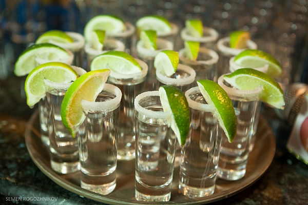

Что такое текила .

Для начала хотелось бы развенчать ряд мифов, бытующих вокруг замечательного мексиканского напитка, носящего имя «Текила» («Tequila»). А этого добра вокруг экзотической гостьи хватает, что и неудивительно: напиток из краев сомбреро и гитар, малоизвестный до последнего времени широким кругам наших соотечественников, просто обязан был породить целую мифологию.
Итак, какие есть мнения о текиле?
– Текила – это кактусовый самогон. Пойло крепкое и вонючее.
– Текила – это кактусовая водка. Водка как водка, пшеницы нет, вот и гонят из колючек. Наша лучше!
– Текила – это следующий этап перегонки мескаля. При грубой перегонке получается мескаль, а при его дальнейшей дистилляции и очистке – текила. Посему мескаль насыщен вкусом и запахом, а текила – выхолощена и рафинирована.
– Текилу гонят из мексиканского овоща – голубой агавы.
– В мескале, а также в текиле (хотя и в меньшей степени) содержится мескалин – галлюциногенный наркотик.
А что же на самом деле?
На самом деле текила – отличный крепкий напиток (как правило, содержит 40% или 38% алкоголя; иногда – 35% алк.), с тонким вкусом и ароматом, питие которого ритуализировано и эстетизировано. Похмелья же наутро – если, конечно, не пить текилу литрами и закусывать – просто не бывает.
Текила – не самогон. Исходное сусло качественно дистиллируют (иногда дважды и даже трижды) и тщательно очищают. Это плохая дешевая текила похожа на самогон, а хорошая по чистоте не уступает элитной водке класса «Люкс». По вкусовым же качествам, на наш взгляд, текила значительно превосходит абсолютное большинство сортов водки.
Текилу действительно делают из голубой агавы (Agave azul tequilana weber). Только это не овощ и даже не кактус, а один из более чем 200 видов семейства пустынных лилий, родственник алоэ. Растение и впрямь похоже на очень большое алоэ (до двух метров в размахе мясистых листьев). Для производства текилы берут голубую агаву, выращенную в строго определенных регионах Мексики, а именно – в определенных областях мексиканских штатов Халиско, Гуанахуато, Мичоакан, Тамаулипас и Наярит – так же, как настоящий коньяк делается из определенных сортов винограда, растущих во французской провинции Коньяк. Это связано с особенностями местного климата и почв. Само слово «текила» (tequila) происходит от названия городка Текила, расположенного неподалеку от Гвадалахары (Guadalajara) – столицы штата Халиско (Jalisco). Ряд особо элитных сортов текилы производится в высокогорных районах этого штата.
При цветении голубой агавы «стрелка» с цветком на конце «выстреливает» за два-три дня на высоту до 4-5 метров. Перед созреванием агавы у нее подрезают лишние листья, чтобы те не забирали на себя животворные соки растения. На плантациях специальный человек следит, когда у растения проклюнется «стрелка», фиксируя самое начало цветения – и тут же срезает «стрелку», заклеивая срез составом на основе натурального каучука. В итоге все соки, которые должны были идти на цветение, начинают бурлить, не находя выхода, и образуют так называемый «ананас» – огромный, очень сочный вырост (вздутие), по форме действительно напоминающий дыню или ананас, весом до 5 кг и более. Вот эти-то «агавовые ананасы» и идут в брожение и переработку для производства текилы.
Таким образом, в текиле – сок самой жизни и цветения!
Текила не является продуктом дальнейшей дистилляции и очистки мескаля. Текилу производят из голубой агавы, а мескаль – в основном, из ее «ближайших родственников»: гигантской агавы, эспадены, дикого сильвестра, тубалы, дазилириона и агавы Кравинского. Короче, это совершенно отдельный напиток, хоть и «родственный» текиле.
Разумеется, никаких галлюциногенов ни в мескале, ни в текиле не содержится.
Кстати, в Мексике текила официально объявлена национальным достоянием, и качество ряда сортов текилы (к примеру, всей линейки сортов компании Tequilas del Seсor – и не только) контролируется правительством Мексики. Существует специальный «Регулирующий Совет Текилы» – El Consejo Regulador del Tequila, A. C. (CRT), состоящий из самих производителей, который следит за исполнением Официальной Мексиканской Нормы для этого напитка. Текила, как напиток, имеет сертификат Denominaciуn de Origen – т. е., сертифицирована, как оригинальный (уникальный) напиток по месту происхождения (производства).
Различают текилу «миксто» – в которой, кроме спиртов голубой агавы (не менее 51%), присутствуют также зерновые спирты (до 49%) – и текилу, приготовленную исключительно (на 100%) из спиртов голубой агавы.
Сорта текилы (независимо от бренда производителя) классифицируются следующим образом:
Белая или Серебряная (Blanco, Plata, Silver). Бесцветная и прозрачная на вид (как водка). Такая текила после дистилляции в бочках не выдерживается. Некоторые считают, что она обладает наиболее «чистым» вкусом голубой агавы.
Молодая или «Ховен» (Joven). Выдерживается в дубовых бочках до 2 месяцев. Такая «минимальная» выдержка на этикетках обычно не указывается. В ряде случаев «молодая» текила может иметь слегка золотистую окраску, и тогда ее называют:
«Оро» (Oro) или «Голд» (Gold) –«Золотая». «Золотая» текила может производиться по-разному, а именно:
– Путем смешения (купажирования) «серебряной» (blanco) или «молодой» (Joven) текилы с выдержанной (reposado) текилой того же бренда.
– Путем процесса «абокадо» (abocado) – т. е., подкрашивания «серебряной» (blanco) или «молодой» (Joven) текилы карамельным (тростниковым) сахаром и / или настоем (экстрактом) дубовой стружки, которых в текиле должно содержаться не более 1 весового процента.
– Путем совмещения купажирования с процессом «абокадо».
При отсутствии купажирования или «абокадо» «молодая» (Joven) текила на вид практически не отличается от «серебряной» текилы (такая же бесцветная и прозрачная), и не маркируется, как «золотая». Т. е., не всякая «золотая» текила – чисто «молодая», и не всякая «молодая» текила – «золотая», что открывает немалый простор для производства целого ряда разнообразных сортов. Но вот с более выдержанными сортами текилы все регламентировано куда строже и понятнее:
Выдержанная или «Репосадо» (Reposado). Может проходить (или не проходить) через процесс «абокадо» (подкрашивания), но в любом случае обязательно выдерживается в дубовых бочках от 2 до 11 месяцев.
Долгой Выдержки или «Аньехо» (Anejo). Выдерживается не менее 1 года в дубовых бочках объемом не менее 600 литров.
Очень Долгой Выдержки или «Экстра Аньехо» (Extra Anejo). Выдерживается не менее 3 лет в дубовых бочках объемом не менее 600 литров.
Небольшая справка из истории текилы: в 1616 году в документах архиепископства Гвадалахары впервые было письменно упомянуто «мескальное вино», производимое в провинции Авалос (ныне город Гузман) – Provincia de Бvalos (hoy Cd. Guzmбn). Это не был крепкий алкогольный напиток (как сейчас), и его употребляли, в основном, священнослужители для отправления культов. Собственно текила родилась после введения дистилляции испанскими колонизаторами. Этот процесс улучшил очистку и вкусовые качества, а также существенно увеличил крепость напитка.
Существует легенда о происхождении текилы: группа местных индейцев укрылась как-то в пещере от грозы. Сильные молнии били вокруг; одна попала в растение агавы и «запекла» его. Когда индейцы вышли после грозы, то обратили внимание на необычный сладковатый запах запеченной агавы. Попробовав печеную агаву на вкус, они нашли ее сладкой и решили, что это полезное растение. Позже один из них забыл в сосуде сок печеной агавы на несколько дней, а когда вспомнил, то заметил, что сок пенится и имеет другой вкус. Он попробовал его, и его сознание изменилось. Так было открыто мескальное вино, и было решено, что оно является даром божества Майауэль, богини фертильности (плодородия). Майауэль вскормила своей грудью с 400 сосками 400 Богов Опьянения – кроликов Сенцон Тоточтин (или бесчисленное их количество).
Таким образом, и согласно легенде, и согласно дошедшим до нас записям архиепископства Гвадалахары, изначально в Мексике производился не особо крепкий напиток вроде браги или домашнего вина из сока запеченной (ферментированной) агавы. Подобный напиток производится в Мексике и до сих пор. Он называется «пульке» (pulque) или «октиль» (octil) и обычно содержит от 4 до 8 процентов алкоголя (хотя в принципе крепость пульке может доходить и до 18% алк.). И лишь позднее, с внедрением дистилляции, этот напиток превратился в известную нам ныне текилу.
Теперь перейдем к брендам и сортам текилы. Сразу оговоримся: мы рассказываем только о тех брендах и сортах, которые пробовали лично, и о которых можем судить по собственному опыту, а не с чужих слов.
Пожалуй, наиболее популярен у нас бренд Sauza. Текила достойная, но не самая изысканная – существуют и более элитные марки. Однако найти их у нас зачастую непросто – да и стоят они заметно дороже. Для первого знакомства с текилой, как напитком, Sauza отлично подойдет. А некоторые ее сорта придутся по вкусу и знатокам-ценителям.
Sauza Blanco, она же «серебряная» – имеет мягкий и ненавязчивый вкус, легкое терпкое послевкусие и обладает классическим ароматом голубой агавы. Прозрачная и бесцветная, как хорошая водка, содержит 51% спирта голубой агавы (остальное – зерновые спирты), 40% алк. Проходит двойную дистилляцию. Рекомендуется тем, кто не любит слишком насыщенный вкус, и кому противопоказаны дубильные вещества, попадающие в продукт при выдержке в дубовых бочках. Впрочем, даже в выдержанной текиле их куда меньше, чем в коньяке или виски.
Sauza Gold (предпочтительнее – Sauza Extra Gold), она же «золотая». Содержит 51% спирта голубой агавы, 40% алк. Это та же «серебряная» текила, только выдержанная до полугода в бочках из белого дуба. Также в процессе приготовления этой текилы применяется карамельный сахар и экстракт дубовой коры. Имеет ярко-золотистый цвет. Вкус у «золотой» текилы заметно более насыщенный и концентрированный, чем у «серебряной», с легкими карамельными тонами и нотками дуба на фоне доминирующего вкуса голубой агавы. Дает длительное согревающее послевкусие. Аромат тоже выражен более ярко и содержит легкие нотки сахарного тростника, карамели и тропических фруктов.
Sauza Conmemorativo Anejo – текила класса «люкс», и одна из лучших выдержанных текил класса «Anejo» (на самом деле это фактически текила класса «Extra Anejo»). Содержит 51% спирта голубой агавы, 40% алк. Выдерживается до четырех лет в небольших бочках из-под коньяка, сделанных из светлого дуба. Имеет темно-золотистый цвет. Приятный, свеже-пряный аромат с нотками цитрусовых. Мягкий, нежный и насыщенный вкус с легкими тонами шоколада, фруктов и ванили на фоне свежести голубой агавы; теплое долгое послевкусие с карамельно-цитрусовыми тонами. Текила для настоящих ценителей – искушенных «текильерос».
Sauza Hornitos Reposado – выдержанная текила для настоящих ценителей. 100% спирта голубой агавы, 38% алк. Выдерживается один год в новых бочках из светлого дуба, имеет цвет старого золота. Вкус в целом близок к вкусу Sauza Conmemorativo Anejo, но более насыщенный и ярче выраженный, ближе к натуральному свежему вкусу голубой агавы; однако при этом на фоне «стержневого» вкуса голубой агавы можно различить нотки и оттенки ванили, персиков и яблок. Дает длительное послевкусие, сначала обжигающе-«перечное», потом – умиротворяюще-теплое, с целым спектром тонких оттенков. Для любителей сильных, насыщенных и многоплановых вкусов, ароматов и ощущений.
Sauza Tres Generaciones Plata («Silver») – «серебряная» текила тройной дистилляции и высшей очистки. 100% спирта голубой агавы, 40% алк. В бочках не выдерживается. Прозрачная, как слеза, с мягким романтическим запахом, тонким, изысканным вкусом и приятным ненавязчивым послевкусием. Рекомендуется для ценителей тонких вкусов.
Sauza Tres Generaciones Anejo – элитная текила тройной дистилляции, выдержанная не менее 12 месяцев в слегка обожженных бочках из американского дуба. 100% спирта голубой агавы, 40% алк. Светло-янтарный цвет. Легкий, пряно-«фруктовый» аромат. Тонкий, чуть пряный вкус, где вокруг центрального тона голубой агавы раскрывается целый букет легких экзотических оттенков. Долгое, мягкое, теплое и чуть «дымное» послевкусие. Текила для настоящих знатоков-«текильерос».
Jose Cuervo. Это, пожалуй, самый популярный в мире бренд текилы – даже более популярный, чем Sauza. Однако у нас, как обычно, «своя, особенная гордость» – в итоге у нас, в Украине и России, в отличие от всего остального мира, Sauza более известна, нежели Jose Cuervo.
Бренд назван в честь дона Хосе Антонио Куэрво, которому испанский король в 1758 году пожаловал для выращивания голубой агавы земельный надел в Мексике, близ города Текила – и его сына, Хосе Мария Гваделупе Куэрво, который в 1795 г. получил патент на производство «мескалевого вина».
Итак, Jose Cuervo и его сорта, которые лично мы успели попробовать:
Jose Cuervo Clasico Premium (Joven) («молодая») – 51% спирта голубой агавы, 38% алк. Серебристо-прозрачная, в бочках выдерживается до 2 месяцев. Текила с оригинальным, ярко выраженным ароматом и вкусом. Рекомендуется любителям сильных ощущений и ярких вкусов. Многие дегустаторы отчего-то называют вкус Jose Cuervo «мягким», «деликатным» или даже «утонченным» – но тут мы позволим себе с ними не согласиться. Вкус у всех сортов Jose Cuervo – на редкость яркий, выразительный, местами даже чуть грубоватый – и совершенно неповторимый. И чем дольше текила выдерживается в бочках – тем этот вкус мощнее. Вообще, Jose Cuervo – один из наиболее оригинальных брендов текилы; ниже мы чуть подробнее расскажем о нем на примере других сортов этого бренда.
Jose Cuervo Especial Plata (Silver) (Made with blue agave) («серебряная») – 51% спирта голубой агавы, 38% алк. Изготавливается с добавлением свежего (не перебродившего) сока голубой агавы вместо части воды. Имеет более мягкий вкус, нежели Jose Cuervo Clasico. Это смягчение явно обусловлено добавлением свежего сока голубой агавы.
Jose Cuervo Especial Oro («Gold») (она же «золотая») – 51% спирта голубой агавы, бывает 38% и 40% алк. Это бленд (смесь) Jose Cuervo Clasico и Jose Cuervo Especial Reposado, выдержанной три месяца в старых дубовых бочках. Наряду с Jose Cuervo Especial Reposado (см. ниже), имеет самый сильный и ярко выраженный вкус из всех сортов текилы, какие нам доводилось пробовать – пряный и чрезвычайно насыщенный. Действительно слегка напоминает хороший, ароматный самогон (в самом лучшем смысле этого слова!). Подобный эффект намеренно достигается использованием при брожении особого сорта дрожжей. Вообще, все марки Jose Cuervo (и эта – в особенности!) – для любителей ярко выраженных и запоминающихся вкусов. Jose Cuervo даже человек неискушенный никогда не спутает ни с какой другой текилой! Из всех сортов текилы по вкусу наиболее близка к мескалю.
Jose Cuervo Especial Reposado – 51% спирта голубой агавы, двойная дистилляция, 38% алк.; выдержка три месяца в старых бочках из белого американского дуба. Также обладает очень ярко выраженным вкусом и ароматом. У Jose Cuervo Especial Reposado вкус и аромат даже более насыщены, чем у предыдущего сорта, но при этом напиток изрядно «облагорожен». В отличие от «золотого» Jose Cuervo, имеет меньше сходства с самогоном; на вид эта текила кажется густой, чуть маслянистой, ярко-золотистого цвета. Мощный запоминающийся вкус с тонами голубой агавы, дуба и дыма, долгое пряное послевкусие; вкус и особенно послевкусие вызывают отдаленные ассоциации с коньяком.
Jose Cuervo Traditional Reposado – 100% спирта голубой агавы, 38% алк. Купаж спиртов голубой агавы, выдержанных в дубовых бочках от 2-х месяцев до года. Текила класса «Премиум» и «классика» текилы, получившая немало международных премий. Это самый первый сорт текилы, который начала выпускать семья Cuervo. Производится с 1795 г., и до сих пор является наиболее популярной в Мексике текилой класса «Reposado». Светло-соломенный цвет. Пряно-травянистый аромат с нотками экзотических фруктов. Вкус заметно более деликатный, чем у других сортов Jose Cuervo. На фоне свежих тонов голубой агавы – оттенки тропических фруктов, дуба и черного перца, с едва заметными нотками ванили. Характерный привкус Jose Cuervo, который достигается путем использования при брожении особых дрожжей, в этом сорте выражен намного слабее, чем в других сортах Jose Cuervo, и больше раскрывается уже на послевкусии. Послевкусие долгое, немного «перечное» и согревающее. Дорогая элитная текила для ценителей «классики» – и одновременно достаточно сложных и деликатных вкусов, ароматов и послевкусий.
Jose Cuervo Especial Black Medallion (Anejo) – 51% спирта голубой агавы, 38% алк. Специальный бленд (купаж) спиртов голубой агавы, перегнанных по фирменной технологии Jose Cuervo, с выдержкой в новых обожженных дубовых бочках более 1 года. Темный, насыщенный цвет, похожий на цвет выдержанного коньяка. Богатый аромат с нотками ванили и экзотических фруктов. Вкус также насыщенный и богатый, с нотками той же ванили, шоколада и тропических фруктов. Долгое и богатое, чуть «дымное» послевкусие, в котором более четко, чем у Jose Cuervo Especial Reposado, прослеживаются «коньячные» тона – как и у некоторых других сортов текилы класса Anejo. Собственно, эта текила и относится к «коньячному» классу.
Olmeca Blanco («серебряная») – ординарная хорошо очищенная текила, которую не выдерживают в бочках. Содержит 51% спирта голубой агавы, 38% алк. Вкус близок к Sauza Blanco, доминируют тона голубой агавы – но при этом, на наш взгляд, вкус более «размыт» и менее выразителен, чем у «Саузы», послевкусие короче.
Olmeca Gold («золотая») – бленд (купаж) из «серебряной» «Ольмеки» и «Ольмеки», выдержанной от полугода до года в дубовых бочках. Содержит 51% спирта голубой агавы, 38% алк. Вкус у Olmeca Gold более насыщенный и концентрированный, аромат тоже более ярко выражен, чем у Olmeca Blanco. Легкое «дымно-фруктовое» послевкусие чуть-чуть диссонирует с оригинальным вкусом голубой агавы и немного приглушает его. Тем не менее, у «Ольмеки» немало своих приверженцев, которые ценят ее выше той же «Саузы», что лишь в очередной раз подтверждает давно известную истину: «На вкус и на цвет товарища нет».
1921 Reposado – считается одним из лучших в мире брендов текилы – и одна из лучших текил, что нам довелось попробовать. Конкуренцию «1921» в классе Reposado из известных нам сортов могут составить немногие; к примеру, текила бренда «Patron», о которой речь пойдет ниже. Содержит 100% спирта голубой агавы, 40% алк. Выдерживается в течение 4-х месяцев в 200-литровых бочках из-под бурбона, благодаря чему обретает неповторимый янтарно-золотистый цвет. Мягкий, насыщенный и при этом весьма тонкий вкус со множеством оттенков и долгим послевкусием, прекрасный аромат. Монументальная квадратная бутылка «под старину» с впечатанной прямо в стекло металлической этикеткой-барельефом «1921». Технология производства сохраняется практически неизменной с XVIII века. Если хочется составить о текиле впечатление «по максимуму», и есть возможность добыть этот редкий сорт – всячески рекомендуем!
Patron Silver (Joven) («серебряная» или «молодая») – прекрасный мягкий напиток с тонким «прозрачным» вкусом и легким, ненавязчивым ароматом. Содержит 100% спирта голубой агавы, 40% алк., в бочках выдерживается менее 2 месяцев, а потому сохраняет наиболее адекватный вкус голубой агавы. Проходит двойную дистилляцию. Хорошо очищенная, высококачественная текила элитного класса. Выпускается в похожих на графины четырехугольных бутылках с корковыми пробками. Бутылирование – ручное, на каждой бутылке – свой индивидуальный номер. К сожалению, на постсоветском пространстве продается по неадекватно высокой цене.
Patron Reposado – выдержанная не менее шести месяцев в небольших старых дубовых бочках текила Patron Silver двойной дистилляции. Содержит 100% спирта голубой агавы, 40% алк., текила премиум-класса. Имеет светло-золотистый цвет, тонкий, немного пряный аромат и свежий вкус. Несмотря на то, что вкус Patron Reposado более насыщен, чем у Patron Silver, это не мешает наслаждаться его тонкими оттенками с нотками ванили и экзотических фруктов на фоне центрального тона голубой агавы – и долгим, медленно затухающим теплым послевкусием. Как и в случае Patron Silver – фирменная бутылка-«графин» с корковой пробкой, ручное бутылирование, индивидуальный номер на каждой бутылке... и, увы, неадекватно высокая цена.
Herencia de Plata Silver («серебряная»). Содержит 100% спирта голубой агавы, 38% алк., в бочках не выдерживается, а потому сохраняет наиболее адекватный вкус голубой агавы. Прозрачная, как слеза; выпускается в приземистых фирменных бутылках с деревянной насадкой на пробке. Для этой текилы используются отборная голубая агава возрастом от 8 до 13 лет. Проходит двойную дистилляцию. Имеет легкий приятный аромат, тонкий, свежий и чистый вкус голубой агавы с едва заметными фруктово-цитрусовыми нотками, ненавязчивое, медленно затухающее послевкусие. Для ценителей тонких вкусов и полутонов.
Herencia de Plata Reposado. Содержит 100% спирта голубой агавы, 38% алк. Проходит двойную дистилляцию. Текила премиум-класса, выдерживается не менее шести месяцев в бочках из белого американского дуба. Напиток светло-золотистого цвета в приземистых фирменных бутылках с деревянной насадкой на пробке. Имеет свежий аромат, в котором переплетаются тона экзотических фруктов, карамели и собственно голубой агавы. Пряный, средней насыщенности слегка «коньячный» вкус с тонами ванили, карамели, цитрусовых, персиков и других фруктов, среди которых прячутся нотки голубой агавы. Послевкусие долгое и теплое, с перечно-ванильными и фруктовыми оттенками. Напиток для любителей богатой палитры вкусовых оттенков.
Herencia de Plata Anejo. Содержит 100% спирта голубой агавы, 38% алк. Напиток золотисто-коньячного цвета в приземистых фирменных бутылках с деревянной насадкой на пробке. Насыщенный пряный аромат. Столь же насыщенный, чуть вязкий вкус с явственными ванильно-коньячными тонами, оттенками шоколада, грецкого и мускатного орехов, сладкого перца и пряностей. Долгое пряное послевкусие. Текила «коньячного» класса. Для ценителей насыщенных и сложных вкусов.
Все сорта текилы марки Herencia выпускаются компанией Tequilas del Seсor.
Reserva del Senor Blanco. Содержит 100% спирта голубой агавы, 38% алк. В бочках не выдерживается. Обладает ненавязчивым свежим ароматом голубой агавы. Вкус насыщенный, глубокий – но при этом весьма деликатный. Уверенно доминируют тона голубой агавы на фоне целого букета тонких оттенков тропических фруктов. Послевкусие теплое, долгое и глубокое. Как и упомянутые ниже другие сорта Reserva del Senor, выпускается в высоких граненых бутылках, похожих на графины, с корковыми пробками со стеклянной «шляпкой».
Reserva del Senor Reposado. Содержит 100% спирта голубой агавы, 38% алк. Цвет – светло-золотистый. Выдерживается в дубовых бочках в течение 11 месяцев. В аромате на фоне свежести голубой агавы явственно присутствуют тона цитрусовых и тропических фруктов. Во вкусе, кроме голубой агавы, также гармонично сочетаются тона ванили, тропических фруктов и цитрусовых. Послевкусие долгое и тонкое.
Reserva del Senor Anejo. Содержит 100% спирта голубой агавы, 38% алк. Цвет – темно-золотистый. Аромат насыщенный, пряный, с нотками шоколада и ванили. Те же шоколадно-ванильные тона присутствуют и во вкусовой гамме, сочетаясь с дымными тонами дуба и тропических фруктов и придавая вкусу Reserva del Senor Anejo не слишком характерный для текилы благородно-коньячный оттенок. Собственно, это и есть текила «коньячного» класса. Вкус голубой агавы в данном сорте текилы уже не доминирует, присутствуя «на заднем плане». Послевкусие долгое и насыщенное, сладковато-пряное.
Все сорта текилы марки Reserva del Senor выпускаются компанией Tequilas del Seсor. По не до конца проверенным, но, тем не менее, заслуживающим определенного доверия данным, текила Reserva del Senor – напиток, потребляемый правительством Мексики. А вот что известно совершенно точно – так это то, что в сентябре 2012 г. министр сельского хозяйства Мексики, встречаясь с президентом Перу, презентовал ему именно бутылку «серебряной» текилы Reserva del Senor. Даже фото имеется.
Что ж, почувствуйте себя министром! Или даже президентом!
Corralejo Blanco. Содержит 100% спирта голубой агавы, 40% алк. В бочках не выдерживается. Выпускается в высоких прозрачных бутылках белого стекла. Аромат голубой агавы на фоне свежести травяного луга. Вкус чуть пряный, свежий, с тонами голубой агавы на фоне легких ноток лимона и тропических фруктов. Послевкусие долгое, согревающее, чуть маслянистое.
Corralejo Reposado. Содержит 100% спирта голубой агавы, 40% алк. Выпускается в высоких бутылках синего стекла. Эту текилу выдерживают в дубовых бочках в течение 4 месяцев. Для выдержки используют бочки трех типов – бочки, бывшие в употреблении – из французского и американского дуба – и бочки из местной разновидности белого дуба – Энсино. Результат – уникальный запах и вкус этой текилы, насыщенные ароматами трех видов дерева. Аромат содержит нотки ванили и тропических фруктов на фоне основного тона голубой агавы. Вкус ярко выраженный, даже чуть резковатый, но при этом весьма богатый, с четко выраженными тонами дуба, голубой агавы, разнообразных фруктов и специй. Послевкусие долгое и теплое.
Corralejo Anejo. Содержит 100% спирта голубой агавы, 40% алк. Выпускается в высоких бутылках красного стекла. Выдерживается в бочках из французского дуба (по другим сведениям – в новых обожженных бочках из американского белого дуба) в течение одного года для достижения наиболее мягкого вкуса. Аромат пряно-свежий, с отголосками грецкого ореха и тонами экзотических трав. Вкус пряный, насыщенный, чуть «перечный», с тонами корицы и ванили, за которыми не сразу вычленяется вкус собственно голубой агавы. Послевкусие горячее, медленно затухающее, с едва уловимыми тонами перечной мяты. Рекомендуется для любителей насыщенных и сложных вкусов.
Corralejo Triple Destilado Reposado. Содержит 100% спирта голубой агавы, 38% алк. Проходит тройную дистилляцию. Выпускается в красивых плоских высокогорлых бутылках-«флягах» синего стекла. Аромат легкий, пряный, с ненавязчивыми тонами луговых трав. Вкус пряный, чуть маслянистый, с тонами грецкого ореха и тропических фруктов на фоне слегка замаскированного ими вкуса голубой агавы. Послевкусие долгое, мягкое и теплое, с едва заметными тонами ванили.
Los Arango Reposado (Corralejo). Содержит 100% спирта голубой агавы, 38% алк. Выпускается в приземистых квадратных бутылках синего стекла, с этикеткой из натуральной кожи, на которой сверху прикреплено металлическое изображение голубой агавы. Очень тонкий и «многогранный» вкус и аромат, долгое теплое послевкусие. Свежесть голубой агавы на фоне легких «цитрусовых» и иных «фруктовых» тонов. Текила для настоящих ценителей, предпочитающих тонкий деликатный вкус со множеством «оттенков».
Leyenda Del Milagro Silver («серебряная»). Содержит 100% спирта голубой агавы, 40% алк., проходит тройную дистилляцию. В бочках не выдерживается. Выпускается в высоких бутылках синего стекла. Имеет тонкий нежный вкус с оттенком приятной свежести и иллюзией едва заметной маслянистости, свежий аромат, очень легкое и долгое послевкусие. Для ценителей тонких, ненавязчивых вкусов и ароматов.
Leyenda Del Milagro Reposado. Содержит 100% спирта голубой агавы, 40% алк. проходит тройную дистилляцию, выдерживается в течение шести месяцев в небольших дубовых бочках. Выпускается в высоких бутылках красноватого стекла. Аромат голубой агавы с «фруктовыми» тонами и едва заметными нотками дуба и карамели. Вкус мягкий, фруктово-карамельный, с нотками сахарного тростника и тонами голубой агавы на заднем плане. Послевкусие мягкое, медленно затухающее, с нотками тропических фруктов и миндаля.
Pepe Lopez Premium Silver. Содержит 51% спирта голубой агавы, 40% алк. В бочках не выдерживается. Свежий, чуть пряный аромат с легкими оттенками цитрусовых. Яркий, ничем не замутненный вкус голубой агавы с явственным привкусом свежего зеленого лайма и легкими оттенками других цитрусовых (так что лаймом, как положено согласно «ритуалу», этот сорт текилы закусывать не обязательно – вкус лайма уже присутствует в самой текиле). Послевкусие теплое, мягкое и «уютное», умиротворяющее. Один из лучших вариантов для первого знакомства с текилой вообще – но наверняка придется по вкусу и заядлым «текильерос».
Pepe Lopez Premium Gold. Содержит 51% спирта голубой агавы, 40% алк. Купаж из Pepe Lopez Premium Silver и выдержанной до года в дубовых бочках текилы Reposado того же бренда; имеет золотистый цвет. Мощный насыщенный вкус, долгое послевкусие, мягкое и теплое; на фоне свежего вкуса голубой агавы – тона ванили и дуба. Отдаленно напоминает вкус Jose Cuervo Especial – но более мягкий и с более широким спектром вкусовых оттенков. Для любителей насыщенных, но не слишком резких вкусов.
Sombrero Negro Silver («серебряная»). Содержит 51% спирта голубой агавы, 38% алк. В бочках не выдерживается. Имеет весьма яркий, чуть «грубоватый» вкус довольно узкого спектра и сильное, обжигающее, но не слишком долгое послевкусие. Во вкусе доминируют резкие, словно «обрубленные по краям», тона голубой агавы, на фоне которых различить какие-либо оттенки довольно затруднительно. Относительно недорогая текила для любителей ярких и простых вкусов.
Sombrero Negro Gold («золотая»). Содержит 51% спирта голубой агавы, 38% алк. Купаж из Sombrero Negro Silver и текилы того же бренда, выдержанной 4 месяца в дубовых бочках (Reposado); имеет золотистый цвет. Вкус более насыщенный по сравнению с Sombrero Negro Silver. По-прежнему доминирует вкус голубой агавы, но тона дуба с легким «карамельным» оттенком придают оному вкусу несколько большую глубину и мягкость по сравнению с «серебряной» Sombrero Negro.
Sombrero Silver («серебряная»). Содержит 100% спиртов голубой агавы, 38% алк. В бочках не выдерживается. Цвет – серебристо-прозрачный. Аромат легкий, не слишком яркий, с легкими нотками зеленого грецкого ореха и луговых трав. Вкус очень мягкий, деликатный, с легкими ореховыми оттенками и нотками черного перца на фоне не слишком ярко выраженного стержневого тона голубой агавы. Послевкусие недолгое, легкое, с нотками черного перца. По вкусу эта текила несколько напоминает текилу Reserva del Senor Silver, что и не удивительно – обе эти текилы (как и Sombrero Negro) производит одна и та же компания.
Sombrero Reposado. Содержит 100% спиртов голубой агавы, 38% алк. Выдерживается в дубовых бочках не менее 6 месяцев. Имеет светло-золотистый цвет. Аромат насыщенный, свежий, с оттенками тропических фруктов и едва заметными нотками зеленого лайма. Вкус чуть маслянистый, тонкий и многогранный, на фоне стержневого вкуса голубой агавы раскрывается целый букет оттенков, с нотками грецкого ореха, дуба, дыма, черного и сладкого перца... Послевкусие долгое, теплое, умиротворяющее, с легкой «спиртовой» горчинкой. По вкусу эта текила несколько напоминает текилу Reserva del Senor Reposado, что и не удивительно – обе эти текилы производит одна и та же компания.
Sierra Silver («серебряная»). Содержит 51% спирта голубой агавы, 38% алк. В бочках не выдерживается. Аромат свежий, легкий, чуть «травянистый». Вкус ярко выраженный, свежий. Легкие лимонно-лаймовые тона на фоне «стержневого» вкуса голубой агавы. Послевкусие короткое, похожее на легкую вспышку тепла, чуть маслянистое, с едва заметными лимонно-травянистыми тонами.
Sierra Reposado. Содержит 100% спирта голубой агавы, 38% алк., проходит двойную дистилляцию. Выдерживается 2 месяца в старых дубовых бочках, имеет ярко-золотистый цвет. Обладает легким ароматом голубой агавы, свежей зелени и фруктов. Вкус чуть маслянистый, мягкий, слегка отдает свежим зеленым огурцом; на фоне присутствующих на заднем плане тонов голубой агавы проступают вкусовые нотки персиков, яблок и ананаса. Послевкусие мягкое, медленно затухающее, чуть терпкое, с тонами свежей зелени и едва заметными нотками чернослива. Рекомендуется любителям свежих, не слишком резких вкусов, богатых оттенками.
Sierra Antiguo Anejo. Содержит 100% спирта голубой агавы, 40% алк. Изготавливается из отборной восьмилетней голубой агавы, выращенной в центральной части провинции Jalisco на высоте более 1700 м над уровнем моря. Достаточно долго выдерживается в дубовых бочках. Имеет золотисто-шоколадный, практически «коньячный» цвет. Густой аромат с шоколадно-коньячными тонами, на фоне которых не сразу различаются нотки голубой агавы. Вкус – шоколадно-ванильный, насыщенный, пряный, с легкой горчинкой и едва заметными кофейными нотками. Собственно вкус голубой агавы проявляется не сразу, а уже на послевкусии – долгом, мягком и теплом. В общем – целый букет оттенков вкуса и аромата. Текила «коньячного» класса. Недаром компания-производитель рекомендует пить эту текилу из коньячных бокалов.
4 Pistolas Gold (текила «4 пистолета золотая»). 51% спиртов голубой агавы, 38% алк. Эту текилу (как и «4 Pistolas Blanco») хранят в стальных бочках вплоть до момента бутылирования. С возрастом она не меняет свои вкусовые качества, и потому имеет неограниченный срок годности. Из-за золотистого цвета многие ошибочно считают, что это выдержанная текила. На самом деле 4 Pistolas Gold в бочках не выдерживается. А ее светло-золотистый цвет – результат подкрашивания карамельным сахаром (допускается использование не более одного процента карамели) или настоем дубовых стружек. Обладает ярко выраженным ароматом голубой агавы с едва заметными пряно-фруктовыми нотками. Вкус мягкий и чистый, вокруг «стержневого» тона голубой агавы различимы легкие карамельно-ванильные и фруктовые оттенки. Послевкусие долгое, мягкое и теплое. Забавно, что на бутылке с текилой «4 Pistolas» изображены лишь три пистолета. Либо четвертым «стволом» считается горлышко самой бутылки, либо предполагается, что эту текилу надо пить, пока не увидишь четвертый пистолет. Однако ставить подобные эксперименты мы бы не рекомендовали.
Tres Sombreros Silver («серебряная»). Содержит 81% спирта голубой агавы и 19% зерновых спиртов, 38% алк. Производится из голубой агавы, выращенной в провинции Халиско (Jalisco). В дубовых бочках не выдерживается. Цвет – серебристо-прозрачный. Аромат – свеже-травяной. Вкус – легкий, чуть маслянистый, с травянистыми тонами и обжигающими нотками черного перца. Тона голубой агавы несколько смазаны. Послевкусие – маслянисто-согревающее.
Tres Sombreros Gold («золотая»). Содержит 81% спирта голубой агавы и 19% зерновых спиртов, 38% алк. Производится из голубой агавы, выращенной в провинции Халиско (Jalisco). Выдерживается в дубовых бочках в течение 2-х месяцев и слегка подкрашивается карамельным сахаром и настоем дубовых стружек. Цвет – светло-золотистый. Аромат – пряный, с нотками специй и экзотических фруктов. Вкус Tres Sombreros Gold сильно отличается от вкуса Tres Sombreros Silver. Легкие тона ванили и персика на фоне вкуса голубой агавы. Также ощущаются нотки черного перца. Послевкусие короткое, тепло-пряное. Tres Sombreros – относительно недорогая текила, при этом достаточно высокого качества и с приятным вкусом (особенно «золотая»). В данном случае имеем достаточно неплохое соотношение цена / качество.
Messicano Alteno Silver («серебряная»). Содержит 100% спирта голубой агавы, 40% алк. В дубовых бочках не выдерживается, цвет – прозрачный, светло-серебристый. Весьма оригинальная марка текилы, которую начали производить совсем недавно. К примеру, в США торговая марка «Messicano Alteno» зарегистрирована 21 октября 2009 г. Соответственно, и к нам (в Украину и Россию) эта текила начала поступать недавно – но уже успела получить довольно широкое распространение. Свежий, «луговой» аромат. Легкий, слегка маслянистый и чуть пряный вкус с нотками черного перца и «травянистыми» оттенками. Долгое теплое послевкусие.
Messicano Alteno Gold («золотая»). Содержит 100% спирта голубой агавы, 40% алк. Недолгая выдержка в дубовых бочках, светло-золотистый цвет. Нежный, чуть пряный аромат. Вкус – очень тонкий и мягкий, в первый момент его почти не ощущаешь – и лишь долгое легкое послевкусие позволяет как следует распробовать этот сорт текилы. Пьется очень легко и мягко, крепость почти не ощущается – так что будьте аккуратны, дабы не «перебрать».
Campo Azul Especial oro («золотая»). Содержит 100% спирта голубой агавы, 38% алк. Недолгая выдержка в дубовых бочках, цвет спелой пшеницы. На фоне аромата свежего сока голубой агавы – пряные оттенки экзотических фруктов с легким «дымком». Ярко выраженный вкус голубой агавы с легкими тонами дуба, нотками черного перца и едва уловимым оттенком зеленого лайма. Послевкусие мягкое, теплое, с тонами ванили и со «вторичным согревающим эффектом». В случае данной текилы имеем прекрасное соотношение «цена / качество»: при содержании 100% спиртов голубой агавы и насыщенном, ярком и запоминающемся вкусе эта текила стоит весьма недорого. Всячески рекомендуем.
Montezuma Aztec Gold («золотая»). Содержит 100% спирта голубой агавы, 40% алк. При производстве этой текилы изначально выгоняют спирт голубой агавы с крепостью 80% алк., а затем, при бутылировании, его разбавляют до крепости 40%. Montezuma Aztec Gold в бочках не выдерживается, а ее ярко-золотистый цвет достигается добавками карамельного сахара (до 1%). На фоне аромата голубой агавы – легкие тона ванили и тропических фруктов. Вкус маслянистый, насыщенный, яркий. На фоне стержневого тона голубой агавы отчетливо ощущаются оттенки черного перца и ванили. Послевкусие мягкое, ванильно-перечное, медленно затухающее.
Azteca Silver («серебряная»). Содержит 100% спирта голубой агавы, 38% алк. В бочках не выдерживается, имеет прозрачно-серебристый цвет. Легкий и свежий аромат с оттенками луговых трав на фоне стержневого тона голубой агавы. Очень мягкий и ненавязчивый вкус с едва заметными орехово-травяными нотками на фоне, опять-таки, стержневого вкуса голубой агавы. Послевкусие долгое, мягко согревающее и медленно затухающее.
Azteca Gold («золотая»). Содержит 100% спирта голубой агавы, 38% алк. В бочках не выдерживается, а цвет старого золота приобретает за счет добавления небольшого количества карамельного сахара и настоя дубовых стружек (до 1%). Легкий аромат свежести с нотками ванили и тропических фруктов. Вкус мягкий, но чуть обжигающий, с легкими нотками ванили и дуба на фоне стержневого вкуса голубой агавы. Послевкусие долгое, горячее, терпкое, с легкой горчинкой.
Agavita Gold («золотая»). Содержит 51% спиртов голубой агавы (остальное – зерновые спирты), 38% алк. Выдержка в дубовых бочках в течение не менее чем двух месяцев и добавление небольшого количества карамельного сиропа и тростникового сахара (до 1%) придают этой текиле насыщенный ярко-золотистый цвет. Пряный аромат с нотками ванили. Насыщенный и свежий маслянистый вкус с нотками грецкого ореха и легкой горчинкой, которая немного скрадывает стержневой тон голубой агавы. Чуть «карамельный» вкусовой финал. Послевкусие легкое и недолгое, согревающее, с легкими нотками жгучего перца. Приятная на вкус, но достаточно «простая» текила, по соответствующей (весьма невысокой) цене.
Agavita Anejo. Текила ультра-премиум класса. Содержит 100% спирта голубой агавы, 40% алк. Спирты отборной голубой агавы крепостью 80% алк. выдерживается от двух до четырех лет в небольших дубовых бочках, а затем разбавляются специально подготовленной дистиллированной водой до крепости 40% алк. Эта текила имеет шоколадно-коньячный цвет. Ванильно-шоколадный, сладковатый аромат с «коньячными» нотками. Аналогичный шоколадно-ванильный, «коньячный» вкус, в котором почти не ощущается тонов голубой агавы. Послевкусие долгое, пряное, мягкое и чуть терпкое. В этой текиле удивительно хорошо сбалансированы цвет, аромат, вкус и послевкусие, гармонично дополняющие друг друга и вызывающие ассоциации скорее с хорошим коньяком, чем с текилой. Собственно, это и есть текила «коньячного» класса, и пить ее рекомендуется, смакуя, как коньяк, из коньячных же бокалов – так полнее раскрывается ее вкус, и особенно – аромат. Лаймом эту текилу лучше не закусывать – как и другие сорта текилы «коньячного» класса.
Casco Viejo Reposado. Содержит 100% спирта голубой агавы, 40% алк., имеет янтарно-золотистый цвет. Выдерживается в дубовых бочках сроком до одного года. Аромат очень тонкий, маслянисто-пряный, с оттенками грецкого ореха и дыма. Вкус трудно описываемый, с легкой горчинкой, нотками черного перца и дыма. Вкус собственно голубой агавы скрыт и ощущается далеко не сразу, на завершении. Весьма оригинальный сорт текилы, подходящий скорее для хорошего застолья, чем для дегустации. Послевкусие долгое и теплое, со «вторичным согревающим эффектом».
Quiote Reposado. Содержит 100% спирта голубой агавы, 40% алк., имеет светло-золотистый цвет с янтарным отливом. Спирты голубой агавы крепостью 80% алк. выдерживается более полугода в дубовых бочках, а затем разбавляются до крепости 40% алк. Обладает ароматом свежести, луговых трав и экзотических фруктов, с легкими тонами голубой агавы. Вкус сложный и деликатный, с легкими тонами корицы, грецкого ореха и дуба и нотками черного перца на фоне несколько скрытого ими стержневого тона голубой агавы. Послевкусие долгое, теплое и мягкое, медленно затухающее, с легкой горчинкой. Эта текила экспортируется из Мексики в ограниченных количествах, а в основном потребляется внутри страны, самими мексиканскими «текильерос».
El Toril Silver («серебряная»). Содержит 100% спирта голубой агавы, 40% алк., имеет прозрачно-серебристый цвет. В бочках не выдерживается. Обладает легким ароматом луговых трав. Вкус «травянистый», очень свежий и мягкий, чуть сладковатый и одновременно – с легкой горчинкой. Стержневой тон голубой агавы выражен мягко и ненавязчиво. Оригинальный вкус этой текилы достигается, в числе прочего, использованием в ее производстве особо мягкой артезианской воды. Послевкусие долгое, согревающее, с легкой горчинкой. Весьма качественная текила по вполне доступной цене.
La Chica Blanco («серебряная»). Содержит 51% спирта голубой агавы, 38% алк., прозрачная и бесцветная, как водка. В бочках не выдерживается. Обладает легким ароматом луговых трав с некоторой спиртовой «отдушкой». Во вкусе тон голубой агавы «спрятан», присутствуют слегка обжигающие нотки и легкая горчинка. В целом, вкус выражен неярко и достаточно близок ко вкусу обычной водки. Послевкусие короткое, чуть вяжущее и согревающее. Довольно простая и недорогая текила, предназначенная скорее для застолий, как альтернатива водке, нежели для дегустаций знатоков. Для того, чтобы составить первое впечатление о текиле вообще, однозначно не годится.
Don Diego Gold («золотая»). Содержит 51% спирта голубой агавы, 38% алк. Эта текила производится в Мексике, но бутылируется, в отличие от большинства других сортов, в Германии – что заметно снижает ее «аутентичность» в глазах знатоков. Зато приятно сказывается на цене: «Don Diego» – достаточно недорогая разновидность текилы. Кроме спиртов голубой агавы и зерновых спиртов, в состав этой текилы входят спирты сахарного тростника, которые обычно идут для производства рома. Ярко-золотистый цвет этой текиле придает не столько короткая выдержка в дубовых бочках, сколько добавление небольшого количества карамельного сиропа и тростникового сахара. Обладает свежее-пряным ароматом с оттенками луговых трав, фруктов и сахарного тростника. Насыщенный, «маслянистый» вкус с легкой горчинкой и ореховыми нотками. Стержневой тон голубой агавы выражен не очень ярко. Послевкусие короткое, теплое, чуть обжигающее, с легкой «фруктовой» кислинкой.
Don Brito Reposado. Содержит 100% спирта голубой агавы, 35% алк. Весьма оригинальная марка текилы с ярко выраженным индивидуальным вкусом и ароматом, непохожая на другие сорта. При производстве этого сорта текилы спирты голубой агавы подвергаются двойной дистилляции, а затем выдерживаются в дубовых бочках от 3 до 11 месяцев. Текила Don Brito Reposado имеет светло-соломенный цвет. Аромат – чрезвычайно сильный и яркий, густой, пряный, отдающий свежестью и экзотическими фруктами, с легким «дымком». Аромат мигом ощущается за пару метров, стоит лишь открыть бутылку Don Brito. Вкус весьма оригинальный, насыщенный, чуть маслянистый, с легким оттенком ванильной сладости, без характерной для многих сортов текилы «кислинки». Стержневой тон голубой агавы несколько замаскирован остальными оттенками вкуса – и в то же время гармонично сочетается с ними. Послевкусие медленное, теплое, с легкой горчинкой черного перца на завершении. Весьма достойная текила. Рекомендуем.
Canitxa Especial Blanco («серебряная). Содержит 100% спирта голубой агавы, 35% алк. Цвет белый, прозрачный, с легким серебристым отливом. Аромат свежего сока голубой агавы с легкой отдушкой спирта. Вкус простой, ярко выраженный – почти исключительно вкус самой голубой агавы с легкими нотками черного перца. Пьется очень легко и мягко. Послевкусие долгое, согревающее, без каких-то особых дополнительных оттенков. Напоминает хорошую водку, только выгнанную из голубой агавы.
Herradura Original Reposado. Содержит 100% спирта голубой агавы, 40% алк. Цвет насыщенный, глубоко-золотистый. Выдерживается в дубовых бочках 11 месяцев. Эта текила на экспорт не идет, продается только в самой Мексике. Аромат нежный, свеже-травянистый, с доминирующим тоном голубой агавы, слабыми нотками тропических фруктов и легкой отдушкой ячменного солода, сразу дающей ассоциацию с шотландским виски. Вкус мягкий, насыщенный, с тонами пряных трав, тропических фруктов и небольшим привкусом зеленого лайма, которые обрамляют и слегка прячут стержневой вкус голубой агавы. Послевкусие долгое, согревающее, с легкими оттенками дуба и ячменного солода, которые опять-таки вызывают ассоциации с шотландским виски. Легкая горчинка на завершении. Очень богатая оттенками вкуса текила для настоящих ценителей.
Mezcal con gusano Monte Alban (with agave worm) – мескаль. Содержит 100% спирта агавы, 40% алк., имеет светло-золотистый цвет. Выдерживается в дубовых бочках до трех лет. Вкус у данного сорта мескаля (знатоки-«мескальерос» считают его одним из лучших) яркий и свежий, чуть маслянистый, «с дымком», тонами дуба и агавы; долгое, теплое, чуть «перечное» послевкусие. Несколько напоминает очень хороший душистый самогон (опять же, в самом лучшем смысле этого слова!). Вкус мескаля немного похож на вкус таких сортов текилы, как Jose Cuervo Especial («Gold») и Pepe Lopez Premium Gold – однако все же более своеобразен.
В каждой бутылке мескаля Monte Alban содержится заспиртованная гусеница Hypopta agavis, питающаяся молодыми листьями агавы – как традиционный признак подлинности мескаля. К каждой бутылке прилагается пакетик со специальной «мескальной смесью» из соли, пряностей и высушенной и измельченной гусеницы Hypopta agavis. Ритуал пития мескаля практически идентичен ритуалу пития текилы (о нем мы расскажем ниже) – только вместо соли в случае мескаля используется «мескльная смесь» из этого пакетика.
Согласно мексиканской традиции, при распитии бутылки мескаля «червячок Хуанито» аккуратно делится поровну между участниками застолья, причем получить меньшую часть гусеницы – оскорбление. У нас же, как и следовало ожидать, родилась своя традиция, которая среди отечественных «мескальерос» получила название «мексиканской рулетки». Тот, кому выпадает «червячок Хуанито», съедает его сам – и бежит в магазин за следующей бутылкой!
С традицией класть в каждую бутылку мескаля «червячка Хуанито» связана любопытная легенда. Якобы давным-давно один янки, будучи в Мексике и зайдя в питейное заведение, затребовал мескаля. И обнаружил в стакане червяка. Янки, естественно, возмутился. Однако хитрый хозяин заведения стал уверять его, что «так и должно быть». Мол, червяк, живущий на агаве – это признак того, что мескаль – самый настоящий. Мол, в каждую бутыль с мескалем обязательно кладется такой червячок, как признак подлинности продукта...
А сам тихонько мигнул помощнику.
Янки поначалу не поверил. Но когда хозяин пригласил его спуститься в подвал, и там янки действительно обнаружил в каждой бутыли по червяку – сомнения его наконец рассеялись. Репутация заведения была спасена, клиент остался доволен.
Разумеется, понятливый помощник по знаку хозяина быстро спустился в подвал и бросил в каждую бутыль по червячку, дабы обмануть американца. С тех пор, якобы, и пошла традиция класть в каждую бутылку мескаля «червячка Хуанито».
Кстати, ели мы этого червяка. Ничего особенного, надо сказать. Проспиртованный белок – и более ничего. По вкусу от собственно мескаля ничем не отличается. А вот сам мескаль действительно хорош. Но полностью его вкус раскроется вам лишь после третьей рюмки – не раньше.
Разумеется, существует и множество других брендов и сортов текилы, не упомянутых в этой статье – но о них следует рассказывать лишь после личной дегустации. Искренне надеемся, что у нас еще все впереди. Добавим только, что текилу нужно покупать исключительно мексиканского производства. Все, что произведено не в Мексике – это вообще не текила: так же как «коньяк», произведенный за пределами французской провинции Коньяк, настоящим коньяком не является.
Как же ее правильно пить?
Классика: выемка у основания большого пальца левой руки с тыльной стороны (между большим и указательным) слегка мажется соком свежего лайма и посыпается солью. Рюмка с текилой берется в левую руку, в правую – ломтик (лучше всего – половинка тонкого кружка) лайма. Надо лизнуть соль, выпить текилу и закусить лаймом.
Второй вариант: все то же самое, но на руку выдавливается больше лаймового сока, он слизывается вместе с солью, и текила лаймом не закусывается.
Третий вариант: текила пьется из рюмки с подсоленным краем (натереть края пустой чистой рюмки ломтиком лайма, обмакнуть в крупную соль, затем налить текилу). Пить, закусывая ломтиком лайма.
Четвертый вариант (разработан лично Дмитрием Громовым, и постепенно находит все больше приверженцев):
– Половинку кружка лайма обильно посолить.
– Сделать первый глоток текилы, покатать во рту, распробовать вкус; проглотить.
– Затем куснуть лайм вместе с солью, но не глотать, а, оставив во рту обильный кисло-соленый сок, не спеша процедить сквозь него оставшуюся в рюмке текилу.
– Покатать образовавшуюся смесь во рту – и только потом проглотить.
На взгляд Дмитрия, вкус текилы в таком варианте раскрывается наиболее полно. Хотя Олег, к примеру, предпочитает «классику».
Конечно, можно пить текилу и просто с солью (без лайма), и с лаймом без соли. Можно – вообще без того и другого, как водку. Можно запивать текилу приправленным солью, соусом «Табаско» и другими специями охлажденным лаймовым или томатным соком (как зачастую делают в самой Мексике). Если лайма не нашлось, можно использовать вместо него обычный лимон (но лайм все же лучше).
Да, один существенный момент: «ритуал» с солью и лаймом, более полно раскрывающий вкус текилы, актуален для «серебряной» и «золотой» текилы, а также для некоторых сортов текилы класса Reposado. Текилу класса Anejo и лучшие сорта текилы класса Reposado лично мы рекомендуем пить, как коньяк: не спеша, смакуя аромат и вкус и не перебивая их лаймом. Впрочем, можете попробовать и с лаймом, и без – и сравнить ощущения.
В случае мескаля чистая соль заменяется на «мескальную смесь» (она же – «соль из червячков», или «worm salt») – смесь из соли, пряностей и высушенного и растертого в порошок «червячка Хуанито». Кроме того, некоторые знатоки-«мескальерос» считают, что мескаль, в отличие от текилы, лучше закусывать обычным желтым лимоном, а не лаймом. Мы пробовали – и с лимоном, и с лаймом. На наш взгляд, с лаймом все-таки вкуснее, но лучше попробуйте сами оба варианта и выберите, какой лично вам больше по вкусу. В мексиканском штате Оахака, где мескаль особенно популярен, его закусывают ломтиками апельсина, присыпанными «солью из червячков».
Закусывают текилу (не ограничиваясь соленым лаймом) примерно тем же, что и водку. Особенно рекомендуются острые мексиканские (кавказские, испанские) мясные блюда, горячие бобы, а также зеленые фаршированные оливки, сыр (в т. ч. пряный и острый), мидии, свежие овощи. Соленые огурцы или грибы тоже идут неплохо. Украинский вариант закуски: черный ржаной хлеб, сало и «синий» ялтинский лук – прекрасный повод выпить за дружбу народов!
C незамысловатой пищей японских рыбаков – суши (которые у нас отчего-то считаются экзотическим деликатесом) – текила тоже прекрасно сочетается. Проверено.
И под занавес – пара рецептов коктейлей на основе текилы.
1. Классическая «Маргарита» – один из самых популярных коктейлей в мире. Простота и гармония, изящество и незабываемый вкус.
Подготовьте плоские широкие бокалы для «Маргариты». Проведите по ободку каждого бокала ломтиком свежего сочного лайма и аккуратно обмакните края бокала в крупную соль на широкой тарелке. После чего бросьте в каждый бокал по 3-4 небольших кубика льда.
В шейкере, на треть заполненном льдом, смешайте компоненты. Из расчета на одну порцию «Маргариты»: 2 унции* текилы (лучше Sauza Extra Gold), 1 унция французского апельсинового ликера «Куантро» («Cointreau»), 2 унции лаймового сока. Встряхните смесь в шейкере и разлейте в подготовленные бокалы. Гарнируйте каждый бокал кружком лайма – и наслаждайтесь!
___________________________________________________________________
* 1 унция = 28,4 мл.; но для простоты можно принять унцию за 30 мл. – пропорции все равно не изменятся, а общий объем порции коктейля увеличится незначительно.
___________________________________________________________________
2. «Тектоник». Long-drink коктейль, разработанный Олегом Ладыженским. Опробован и высоко оценен нами обоими, а также рядом людей, вкусу которых мы доверяем.
Высокий бокал объемом 250-350 мл на треть наполнить кубиками льда. На лед выдавить немного сока свежего лайма. Влить в бокал от 25 до 50 мл. текилы Sauza Blanco (в зависимости от объема взятого бокала). Долить бокал охлажденным тоником Schweppes (подходит только чистый, бесцветный тоник – но ни в коем случае не «фруктовый»!). Готовый коктейль гарнируйте кружком лайма. Пить через соломинку – не спеша и смакуя вкус.
Почувствуйте вкус жизни!
Авторы от души благодарят Наталью Малинко (Мексика) за консультации и материалы по географии, истории, легендам и реалиям Мексики, связанным с производством текилы. Эти материалы и консультации очень помогли нам при написании данной статьи.
Дмитрий Громов и Олег Ладыженский (Генри Лайон Олди), февраль 2013 г.